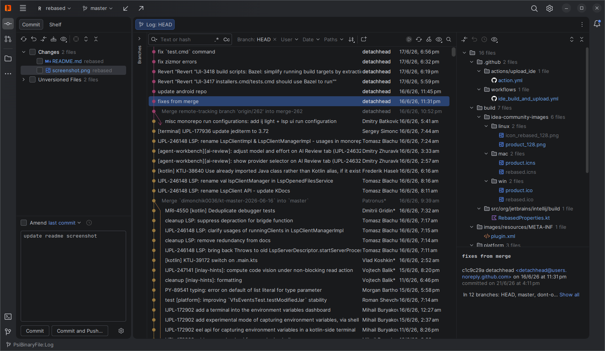

An independent Git client
Git across your repositories.
Find repositories by branch and open their Git logs together. Keep the IntelliJ Git tools in a separate desktop application.
Reforked is an independent fork of Rebased. It welcomes reviewed contributions from people and AI agents.

Why Reforked exists
Reforked builds on Rebased, a Git client based on the IntelliJ platform.
Upstream Rebased does not accept AI-generated code. Reforked uses AI agents in development and accepts their contributions.
We maintain this fork so we can continue to add features and improvements under that contribution policy.
Contributors remain responsible for reviewing their changes and running the affected tests.
The fork keeps its connection to upstream. We can import upstream fixes and improvements while maintaining our own features and contribution policy.
Repositories by Branch
Find matching repositories
Match a complete branch name across the root repository, initialized submodules, and other registered Git repositories.
Give each repository a Log
Open one tab per matching repository. Each tab shows its full history and supports the normal Log filters.
Keep your tab settings
Remember the selected branch, tab titles, selected tab, and dismissed tabs after a restart.
Use the feature
- Open a root repository that has at least one submodule.
- Select Repositories by Branch in the Log toolbar.
- Enter a branch name and select Apply.
- Select Clear to return to one unfiltered Log.
The feature leaves the checked out branches unchanged.
Get Reforked
The existing prerelease 1.1.22-precipoint.1 uses the Rebased name and icon. New packages built from master use Reforked.
Windows installers are unsigned. Read the release notes for the features in each build.
People and AI agents can contribute.
This fork accepts AI assistance and AI-generated code. Contributors must review their changes and run the affected tests.
Keep each feature in separate commits. The contribution guide explains how to import changes from upstream or another repository.